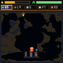
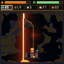
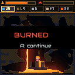

The job
A blinking arrow marks a vent at the top of the cave. When the gauge fills, lava pours — thick, gloopy, glowing, and headed for the town at the bottom. Divert it. Outlast the flow. Save the houses.



Every level is a freshly carved organic cave. The lava always has a route to the bottom — your job is to make sure that route isn't through the town. You win when the flow ends with the town standing; you lose if the town burns, or you do.
Controls
The dashboard
- 🔥 Lava gauge — fills UP while you prepare (the flame flickers in the final seconds), then drains DOWN while the lava flows. When it empties with the town alive, you've won.
- 🏠 Town bar — the town's integrity. Green is healthy; red is a barbecue.
- Tool slots — your five tools with remaining stock. The gold frame is selected.
The two phases
1 · Planning
The gauge fills. Scout the cave, pick the channel you want the lava to take, and spend your stock: carve with the pickaxe, angle logs into deflectors, wall off with sandbags, pre-place water sources. Nothing flows yet — but the clock does.
2 · The flow
Lava pours from the vent and every water source you placed starts running. Now it's triage: blast new channels, drop emergency sandbags, dig relief routes — while staying out of the melt yourself. The flow runs for a fixed time; survive it and keep the town standing.
Tools
| Tool | Stock | What it does |
|---|---|---|
| Water Source | limited | Places a nozzle that pours water for the whole flow phase. Water quenches lava into solid obsidian on contact — a wall that builds itself |
| Log | limited | An angled timber deflector. ▲▼ rotates before placing. Lava rides along it — until it burns through, so don't lean on one log forever |
| Pickaxe | ∞ | Digs through dirt and rock. Carve channels, drop floors, open relief routes |
| Sandbags | limited | A quick pile of sand — instant dam, and lava bakes it hard |
| Blast Charge | scarce | Blows a crater. The fastest way to open a new channel — or to ruin a good one. Aim carefully |
Placements will never trap you — the game refuses to seal a block over your own pixels.
Reading the lava
- It's thick. Lava creeps, mounds, and leans on obstacles before it spills — you have more time than you think, but less than you'd like.
- It cools at the edges. Slowed lava crusts into dark basalt with glowing cracks; the crust itself can dam later flow.
- Water is your concrete. Where a stream of water meets the melt, it flashes to steam and leaves obsidian. A well-placed source casts a wall exactly where the lava insists on going.
- Light tells the truth. The glow reaches around corners but not through walls — if a passage is lighting up, lava is coming down it.
Field notes
- Spend the planning phase below the vent, not beside it — walk the route the lava will take.
- A log angled just under the vent splits the stream early; two logs make a zigzag that bleeds its momentum.
- Dig your relief channel before placing sandbags — bags redirect pressure, and pressure needs somewhere to go.
- Keep one blast charge for the endgame. A late surge through a crusted channel is what it's for.
- The grapple swings faster than your legs run. When the flow starts, travel by ceiling.